The problem
Today the street works for no one
Gachibowli and the Financial District have no rail at all; the metro's Blue Line ends at Raidurg. Hundreds of thousands of IT workers drive or ride two-wheelers on roads built only for cars.
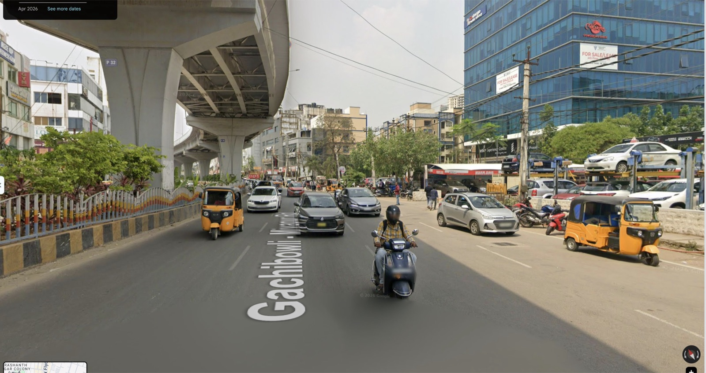
No footpath
People walk in the traffic lane, between parked cars and moving autos.
The kerb is a car park
Cars, autos and two-wheelers fill the edge of the road.
No room for buses or scooters
Three general lanes each way and nothing else. A short trip to the office is not walkable and not safe on two wheels.
The idea
Four parts that only work together
The bus carries the long part of the trip; the scooter and the walkway cover the first and last kilometre; residential streets make the trip from the gate safe; and a simple fare makes changing buses painless.
Bus in the median
Three one-way loops and three two-way corridors, a bus every 5–8 minutes at peak.
Walk-and-scoot edge
A 1.5 m walkway, 2.0 m scooter lane and planted kerb on every bus road.
Home-to-station streets
Slow, safe residential streets within 2 km of every station.
One simple fare
₹10 a bus, never more than ₹20 a journey, one tap with the metro card.
The bus network
Seven routes, each checked on the map
Every route was checked on OpenStreetMap. Where there is a separate road back, buses run one way round a loop and need only one median lane. Where there is only one main road, as from Miyapur, KPHB and Chandanagar, buses run both ways on a corridor. Loops that share a road run the same way along it, like meshed gears.
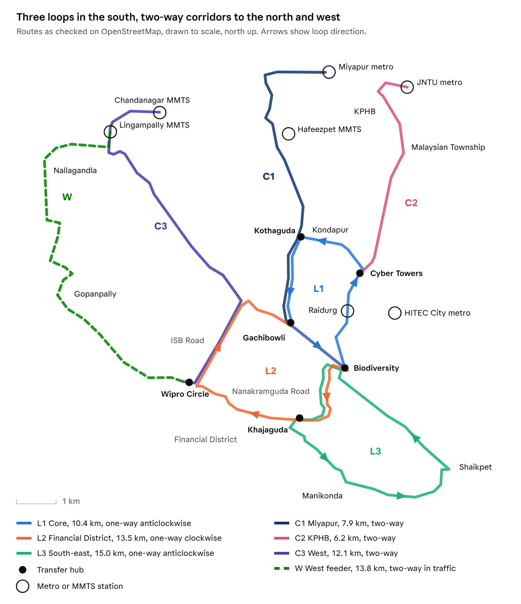
Routes and fleet
| Route | Type | Serves | Length | Buses | Phase |
|---|---|---|---|---|---|
| L1 Core | One-way loop, anticlockwise | HITEC City, Madhapur, Kondapur, Kothaguda | 10.4 km | 9 | 1 |
| L2 Financial District | One-way loop, clockwise | Gachibowli, Raidurg, Khajaguda, Financial District | 13.5 km | 11 | 1 |
| L6 South-east | One-way loop, anticlockwise | Manikonda, Shaikpet | 15.0 km | 8 | 2 |
| C1 Miyapur | Two-way corridor | Miyapur, Hafeezpet to the loops | 7.9 km | 11 | 2 |
| C2 KPHB | Two-way corridor | KPHB to the loops | 6.2 km | 9 | 2 |
| C3 West | Two-way corridor | Chandanagar MMTS, Lingampally, past HCU on Old Bombay Road, Gachibowli, ISB Road, Wipro Circle | 12.1 km | 12 | 2 |
| W West feeder | In traffic, signal priority | West of the loops, in mixed traffic | 13.8 km | 13 | 3 |
| Network | ~79 km | 73 | |||
Why loops: one lane fits an 80-ft road
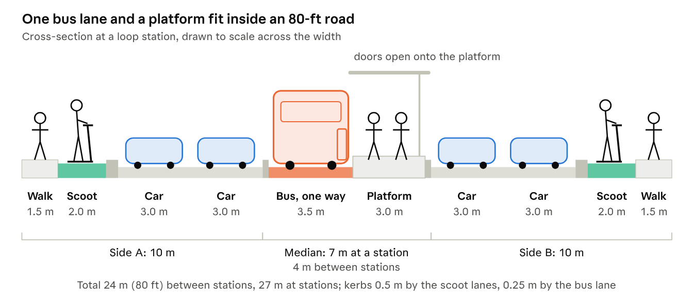
A normal median busway needs a lane each way plus a central platform, about 7.6 to 10.6 m, and buses with right-side doors.
Because each loop road only ever carries buses one way, one 4 m lane is enough and the platform always sits on the bus's left. Standard buses with left-side doors serve every platform.
The whole street, with walkways and scooter lanes on both sides, fits in 24 m. Corridors, which carry buses both ways, need about 90 ft.
About 110 stops in all, ~90 of them median stations with open platforms, shade roofs and arrival screens, each next to a scooter dock.
Risk and response
Keep cars out of the bus lane, and plan for narrow roads
Delhi's BRT was removed in 2016 partly because cars took over its lanes and enforcement was weak. Physical barriers and automatic fines from day one avoid that.
Car-trap pits at every entry
- Pit wider than a car's track, narrower than a bus's: buses roll over, car wheels drop in
- Only at low-speed entry points and stations, never along the lane
- Bollards keep two-wheelers and autos out; red surface and signs before every pit
- About ₹10–15 lakh each; ~100 pits, ₹10–15 crore. Road-safety audit before use
AI cameras, automatic fines
- Number-plate cameras every 300–500 m, plus a forward camera on every bus (~₹50,000 each)
- AI spots any vehicle in the lane, day and night
- E-challan through Cyberabad Traffic Police; fines rise with each repeat
- Tow truck called automatically for any stopped vehicle
The lane is bus-only all day; ambulances and fire engines may use it.
Where the road is narrower, cars give way first
| Road width | Bus | Scooters | Walkway | Cars |
|---|---|---|---|---|
| 90 ft and over | Two-way median lanes | 2.0 m kerbed lane | 1.5–2.0 m | Two lanes each way |
| 80–90 ft | One-way median lane on loops; two-way on corridors | 2.0 m kerbed lane | 1.5 m | Two each way on loops, one on corridors |
| 60–80 ft | Kerbside bus lane in the peak direction | 1.5 m painted lane, Tokyo style | 1.5 m | One lane each way |
| Pinch points under 60 ft | Shared lane with a bus-first signal | Shared at 20 km/h, pictograms | 1.5 m | One lane, or a one-way pair |
The walkway is never cut
It keeps at least 1.5 m on every stretch.
A car lane goes first
Before the bus lane or scooter lane is narrowed. Under metro pillars, the bus runs between pillars or at the kerb.
Land purchase is the last resort
Every stretch is measured in 2027 before design.
The street edge
Every bus road gets a walk-and-scoot edge
Each side: 1.5 m walkway, 2.0 m scooter lane, 0.5 m planted kerb, then two 3 m car lanes, 10 m in all. Because buses stop in the median, the kerb never has bus bays or waiting crowds, which is what makes a continuous scooter lane possible.
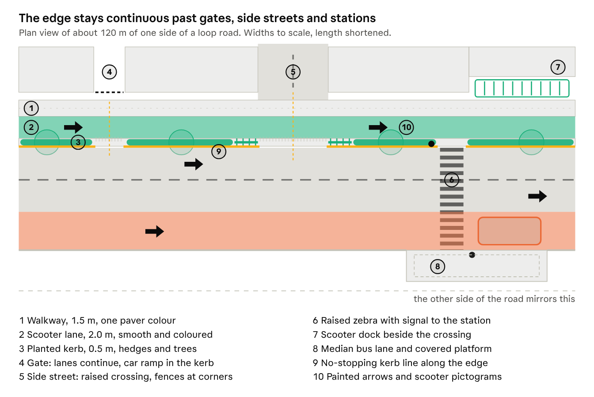
Five rules
No gaps
Walkway and lane cross gates and side streets at their own level.
Nothing in the walkway
Poles, stalls and signboards go in the planted kerb.
No stopping on the edge
A coloured kerb line, as in Tokyo.
A dock at every crossing
Beside each crossing to a median station.
Fenced corners
Set-back crossings, as in Tokyo and Dubai.
What we borrow from Tokyo and Dubai
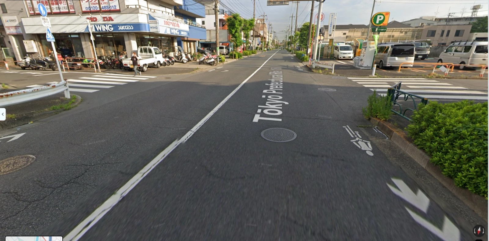
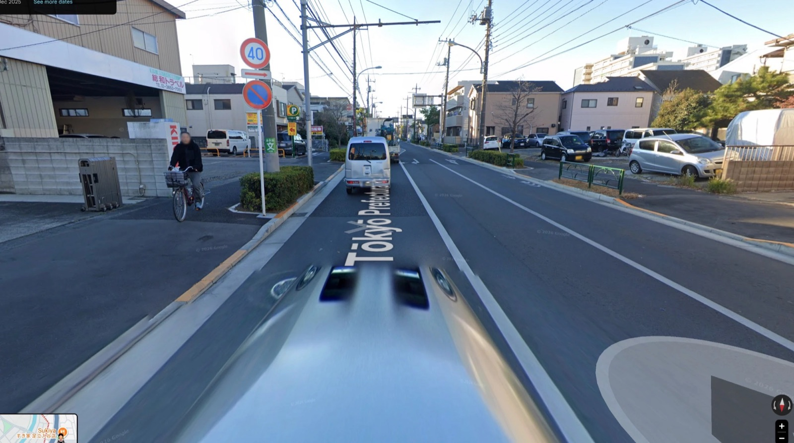
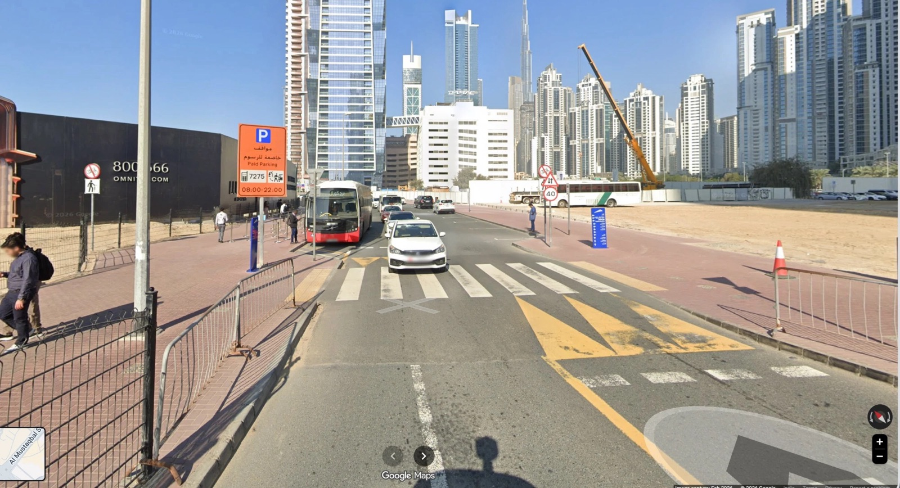
Build it in three steps
| Step | What | Time | ₹ crore per km |
|---|---|---|---|
| Quick kit | Paint, planters, bollards, temporary kerbs | Weeks | small; ₹30 cr for all of Phase 1 |
| Standard edge | Kerbed walkway and scooter lane, docks, lighting | Months | 9–12 |
| Full rebuild | Plus covered drains, duct bank, cables underground, shade | With road works | 16–22 |
Worked example: Gachibowli–Miyapur Road near Kothaguda
The first mile
Home to station
Most trips start on a residential street, not a bus road. If the first 500 metres from the gate is unsafe, dark or blocked, people take the car. Every home within 2 km of a station, about 10 minutes by scooter, gets one signed access route.
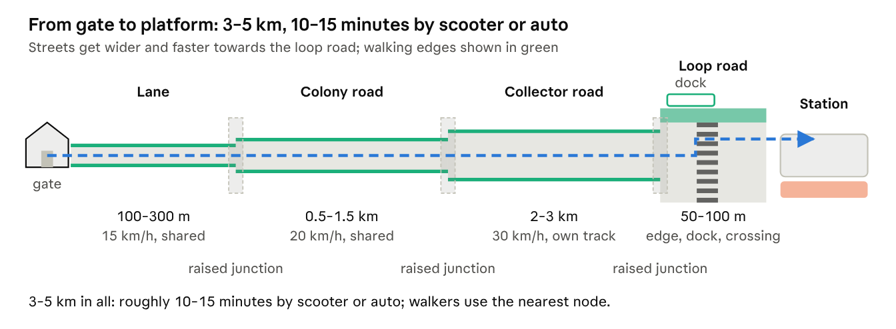
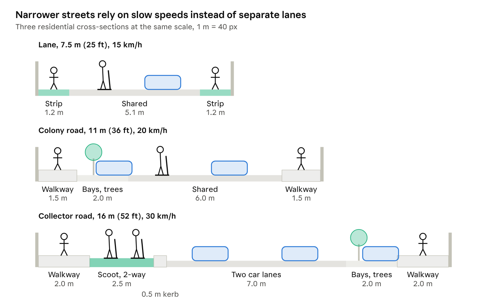
km/h on lanes
Shared, narrow streets in front of homes.
km/h on colony roads
Walking strips, speed tables, lighting.
km/h on collector roads
With a separate scooter track.
What the fix includes
- Walking strips, speed tables at junctions, lighting every 25–30 m
- Clearing encroachments and parked vehicles from the route
- Signage to the nearest station and dock
- Resident welfare associations choose the route and open side gates towards stations
Cost
| Quick kit | ₹0.7–1.2 cr/km |
| Full upgrade | ₹3–5 cr/km |
| About 60 km of routes | ₹130–220 cr |
Worked example: Mayuri Nagar Main Road
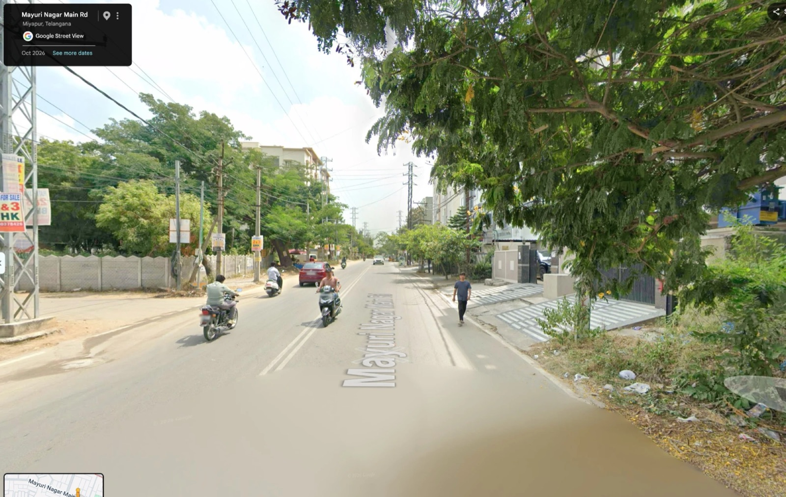
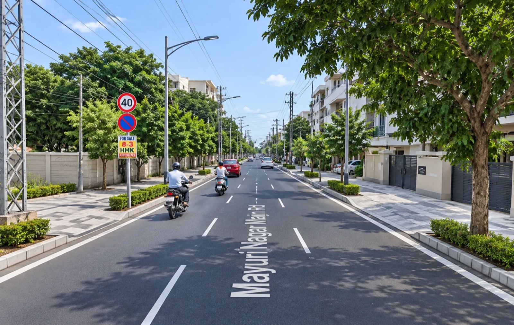
The reimagined image shows the walkway and street trees; the final design also adds a scooter track and a 30 km/h limit.
The standing e-scooter
A light, slow scooter for the last 2 km
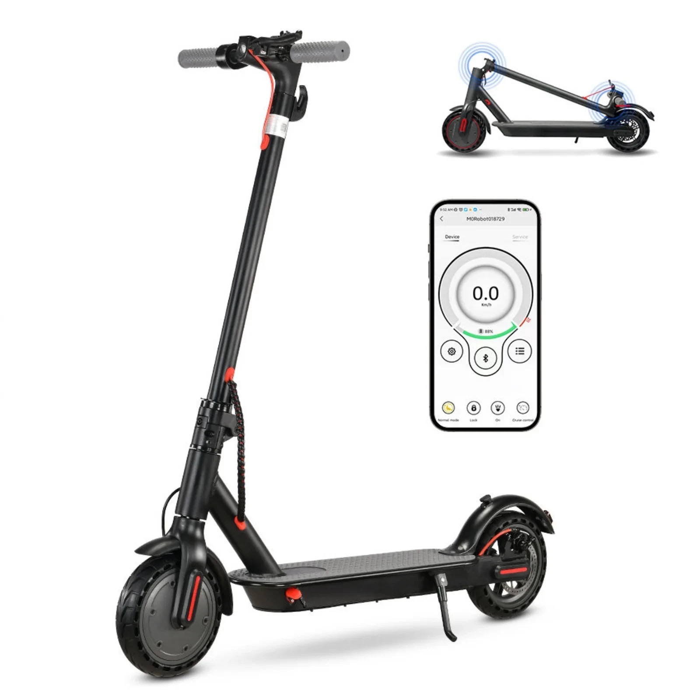
The vehicle
Standing e-scooter, top speed 25 km/h, slowed to 10 km/h near stations by GPS; lights, bell and indicators.
Where it rides
Scooter lanes and slow residential streets, never walkways or bus-road car lanes; parked only in docks.
How people get one
Shared fleets from 2–3 licensed operators, or buy your own.
What the state must do
Notify a legal e-scooter category (standing scooters are not clearly covered today), license operators with fleet caps, riders 16 and over with helmets.
| Shared fleet | Scooters | At ~₹26,000 each |
|---|---|---|
| Phase 1 | 1,500 | ~₹4 cr |
| Phase 2 | 4,000 | ~₹10 cr |
| Full network | 8,000–10,000 | ~₹21–26 cr |
Operators buy and run fleets; shared-fleet models are usually sturdier and cost more. Operators get a GHMC permit with fleet caps, a two-hour limit to clear misparked scooters, insurance per ride and anonymised trip data shared with the city. Combined bus-and-scooter monthly pass: [₹__], to be agreed.
The fare
One tap, one simple fare
Same fare for every rider. Pay with the Hyderabad Metro card, a RuPay NCMC card or an app QR ticket; no cash on buses, no conductors.
Each bus you board
Tap the validator by the door. No tap-out.
Most for one journey
Any number of buses within 60 minutes.
Daily cap
The rest of the day rides free.
Monthly pass
Unlimited rides, less than running a two-wheeler.
Why per bus, not per km
Buses are an open system: people get off onto open platforms and footpaths, not through gates as in the metro. Distance fares would need everyone to tap out inside the bus every time, and missed tap-outs mean overcharges and disputes. One tap when boarding, with a ₹20 journey cap, keeps transfers cheap, which the loop-and-corridor network depends on.
Checks and fallback
Roving inspectors with handheld readers; ₹500 penalty for riding without a tap. If long single-bus rides on C1 and C3 turn out to be common, a ₹15 corridor boarding fare is the fallback, decided on six months of tap data.
Operations
About ₹66.5 per bus-km, break-even at 850 journeys per bus a day
Electric buses run by private operators under a gross-cost contract, paid ₹59 per km. The city adds about ₹7.5 per km for the fare system, inspectors, control room and station upkeep. Driver-only buses.
of 73 buses in service each day
bus-km a day, about 190 km per bus
a year to run, about ₹8.3 lakh a day
Break-even
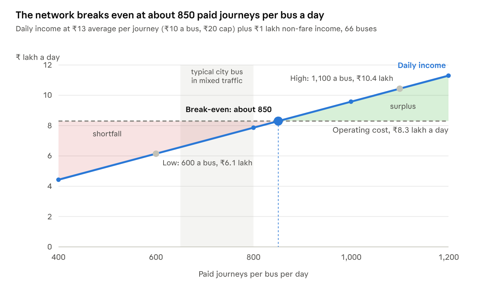
Average ₹13 a journey
If 30% of journeys use two buses, plus ₹1 lakh a day from ads and station rents.
Low year: −₹8 crore
At 600 journeys a bus. Plan for this in year one.
Strong year: +₹8 crore
At 1,100 journeys a bus. Each extra 100 adds about ₹3 crore a year.
Indian city buses in mixed traffic carry roughly 650–800 passengers per bus per day. Levers if it comes in low: fewer off-peak km, 9 m buses on quieter routes, and a ₹15 corridor boarding fare.
Costs
Streets about ₹1,400 crore; whole programme about ₹1,600 crore
Built from Hyderabad-level unit rates including GST, plus 4% traffic management and 15% design, supervision and contingency. More than half the cost of a bus road is below the surface: moving pipes and poles, covered drains, a shared duct bank, and overhead cables put underground — the scope of Bengaluru's TenderSURE streets, reportedly ₹10–20 crore per km.
| Part of the network | Road length | ₹ crore |
|---|---|---|
| Loop roads L1, L2, L6: full rebuild, one-way bus lane | ~32 km | 580–800 |
| Corridor roads C1, C2, C3: full rebuild, two-way bus lanes | ~21 km | 420–570 |
| West feeder: walkways and painted lane | ~14 km | 40–70 |
| Home-to-station routes: quick kit, busiest upgraded | ~60 km | 130–220 |
| Total at 2026 rates (central ~₹1,390 cr) | 1,170–1,660 |
per km of bus road (loop ₹21, corridor ₹23), with drains and cable ducts
per km, standard / full walk-and-scoot edge, both sides
per km, one-way / two-way median bus lane
cheaper option keeping existing drains
Transit capital: ₹115 crore, no buses to buy
| Item | Quantity | ₹ crore |
|---|---|---|
| Depots with overnight charging | 2 | 40 |
| Median stations: open platform, shade roof, arrival screens | ~90 | 45 |
| Fare system: validators, handheld readers, back office, app | Network | 8 |
| Fast chargers at route ends | 4 | 6 |
| Kerbside stops on the West feeder | ~20 | 3 |
| Control room and live tracking | 1 | 3 |
| Contingency, about 10% | 10 | |
| Total | 115 |
Buses come through the per-km operating contract. With 5–6% yearly price rises over a five-year build, streets come to about ₹1,500 crore; with transit capital, the programme is about ₹1,600 crore. Possible sources: state and GHMC capital budgets, PM e-Bus Sewa support for buses and charging (eligibility to confirm), depot land from TGIIC or HMDA, and station sponsorship by IT companies.
Rollout
Start with two loops, then grow
Phase 1 covers the densest office area — HITEC City, Gachibowli, Raidurg, Khajaguda and the Financial District. It opens with temporary kerbs and paint, then is built permanently. Phase 2 goes ahead only if Phase 1 proves demand.
Survey and design
Road widths on every route, a ridership survey with IT employers, a market check with operators.
Phase 1: L1 and L2
24 km, 20 buses, about 35 stations, and the walk-and-scoot edge on the same roads. ~₹470 cr streets, opening with a ₹30 cr quick kit.
Phase 2: C1, C2, C3, L6
41 km and 40 buses, if Phase 1 carries 25,000 trips a day. Miyapur, Hafeezpet, KPHB, Chandanagar, Manikonda, Shaikpet.
Phase 3: West feeder
13 buses, and a Kokapet Neopolis loop as that area grows.
Home-to-station routes open with each phase, around its stations: Kondapur, Kothaguda, Gachibowli, Raidurg and Khajaguda first.
Risks
What could go wrong, and the plan for it
| Risk | Response |
|---|---|
| Cars and two-wheelers enter the bus lane | Car-trap pits at entries, bollards, AI number-plate cameras on poles and buses, automatic e-challans |
| Road narrower than needed | Pre-agreed fallback: drop a car lane, then kerbside bus lane, then shared lane with bus-first signal; walkway never cut |
| Metro pillars in the median | Bus lane between pillars where the gap allows, otherwise at the kerb |
| Low ridership in year one | Plan for −₹8 cr; trim off-peak km, 9 m buses, ₹15 corridor fare; Phase 2 only after 25,000 trips/day |
| Scooters cluttering walkways | Dock-only parking, GPS slow zones, two-hour clearing rule and fleet caps in operator permits |
| No legal category for standing e-scooters | Telangana Transport Department notifies one before any fleet launches |
| Fare evasion on open platforms | Roving inspectors with handheld readers, ₹500 penalty |
| Costs higher than estimated | Range of ₹1,170–1,660 cr carried; cheaper ₹970 cr option; costs confirmed by survey and tenders |
| Many agencies involved | One lead (HUMTA) with GHMC, HMDA, TGIIC, TGSRTC, HMRL and Cyberabad Traffic Police on a single programme board |
The ask
Four decisions to start in 2027
Approve the bus network, starting with loops L1 and L2, then the corridors and L6.
Adopt the street standard: a walk-and-scoot edge on every bus road and a home-to-station route around every station.
Approve the fare and contract: ₹10 a bus with a ₹20 journey cap, and a per-km electric bus contract.
Fund the start: about ₹470 crore for Phase 1 streets, opening with a ₹30 crore quick kit, and ₹115 crore for depots, stations and the fare system.
Documents
The full plans
This page summarises six documents. Each holds the detail, drawings and assumptions behind the numbers here.
1. Bus Loops Final Plan
Routes, stations, fleet, phasing, bus-lane enforcement, narrow roads, the e-scooter.
Open PDF2. Walk and Scoot Sidewalks Design Guide
The street edge, five rules, Tokyo and Dubai lessons, Kothaguda example.
Open PDF3. Home to Station Residential Street Guide
Street types, speeds, gated communities, Mayuri Nagar example.
Open PDF4. Bus Operations Costing and Fare Proposal
Fare rules, operating model, cost per km, break-even, risks.
Open PDF5. Road Upgrade: Cost and Technical Specifications
Unit rates, specs to IRC codes, cost per km, phase costs.
Open PDFAll figures are planning approximations at 2026 prices, to be confirmed by a road-width survey, a ridership survey and operator tenders.